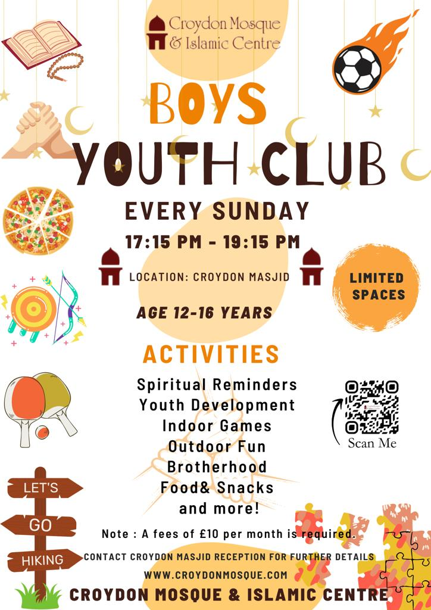
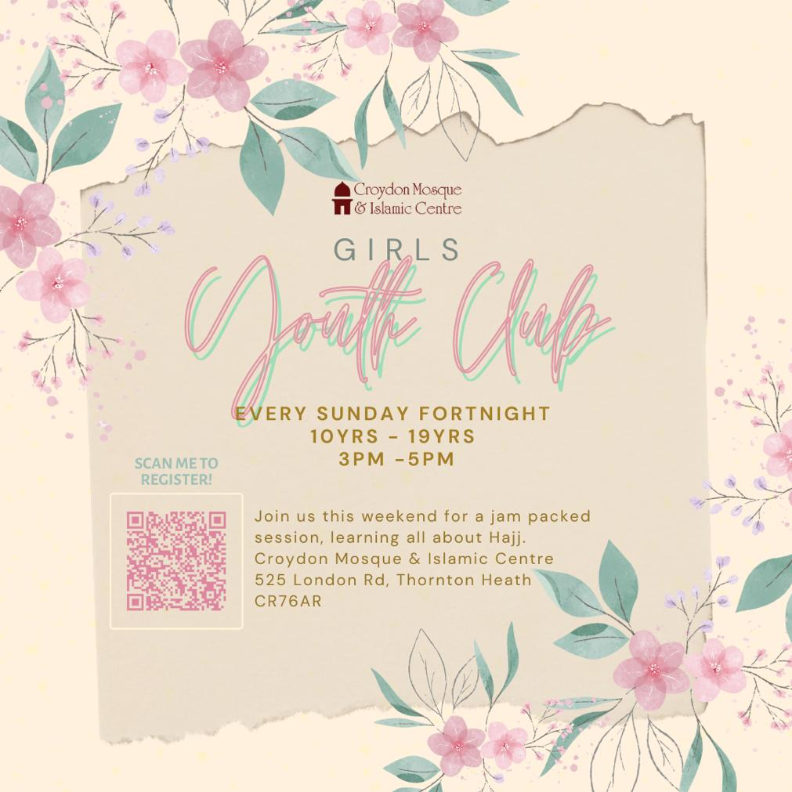

Stay Connected
Download the CMIC App
Get live prayer times, Qibla compass, event notifications, and more right from your phone.
Serving the community since the 1970s
Croydon Mosque & Islamic Centre (CMIC) has been at the heart of the Muslim community in Croydon since the 1970s. Located on London Road, Thornton Heath, we serve thousands of worshippers daily and provide a wide range of services for the community.
With a capacity of over 3,000 men and 500 women, our mosque is one of the largest in South London. We are dedicated to providing a welcoming space for worship, education, and community engagement.
Led by dedicated scholars and community members serving the Croydon Muslim community.
From education to spiritual guidance, we provide a wide range of services for the community.
Islamic education for ages 5-12
Mon-Fri 5-6:45pm | Sat-Sun 10am-12:30pmIslamic studies for young women
Mon-Fri 5-7:30pmIslamic study, Quran recitation & Arabic
Mon-Thu 10am-1pmDars e Hadith, Fiqh & English lectures
Wednesday & Saturday eveningsIslamic marriage & registration
By appointmentWalk-in legal consultation
Sundays from ZohrRental space available for events
Contact us for availabilityWeekly Islamic lecture series covering Fiqh, Hadith, and contemporary issues.
Learn the proper recitation of the Holy Quran with qualified teachers.

Activities and programmes for young boys in the community.

Activities and programmes for young girls in the community.
Our Madrasah aims to educate youth in Qur'an and Sunnah teachings. Over 500 children enrolled, ages 4-17, studying Quranic studies, Islamic studies, and du'a memorisation.
Monday – Friday
5:00 PM – 7:00 PMSaturday & Sunday
10:00 AM – 12:30 PMA collection of articles on various Islamic topics by our scholars.
Your generous donations help us maintain the mosque, run educational programmes, and serve the community.
Get live prayer times, Qibla compass, event notifications, and more right from your phone.